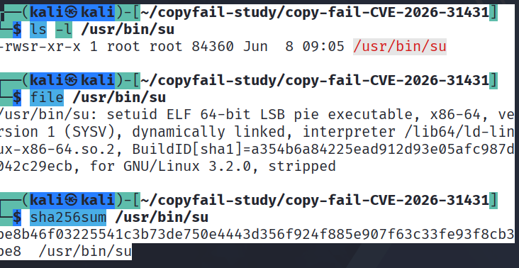

01
취약점 개요
이번 미션에서 분석한 CopyFail은 Linux 커널 AF_ALG 사용자 공간 암호화 인터페이스의 AEAD 처리 경로(algif_aead)에 있던 로컬 권한 상승 취약점이다. CVE 식별자는 CVE-2026-31431이다.
Linux CNA의 공개 정보에 따르면 이 문제는 Linux 4.14부터 존재했으며, Linux 6.19 안정 브랜치에서는 6.19.12에서 수정됐다. CVSS v3.1 점수는 7.8(High)이며, 벡터는 CVSS:3.1/AV:L/AC:L/PR:L/UI:N/S:U/C:H/I:H/A:H다. 원격 공격은 아니지만, 로컬의 일반 사용자 권한을 가진 공격자가 별도의 사용자 상호작용 없이 높은 권한을 얻을 수 있다는 의미다.
이 취약점은 네트워크 서버에 원격으로 접속해 바로 악용하는 유형이 아니다. 공격자는 먼저 해당 시스템에서 코드를 실행할 수 있는 로컬 계정이 필요하다(AV:L, PR:L). 반면 추가 조작이나 피해자의 클릭은 필요하지 않으며(AC:L, UI:N), 성공하면 기밀성·무결성·가용성 모두에 높은 영향이 생긴다(C:H/I:H/A:H). CVE 레코드의 CWE 분류는 자료원에 따라 다르게 표시되므로, 이 글에서는 커널의 메모리 매핑과 버퍼 처리 오류라는 기술적 원인에 초점을 맞춘다.
02
먼저 알아둘 개념
AF_ALG는 무엇인가
AF_ALG는 애플리케이션이 커널의 암호화 기능을 소켓 인터페이스로 사용할 수 있게 해 주는 Linux API다. 프로그램은 알고리즘 이름과 키, 입력 데이터를 커널에 전달하고, 커널의 Crypto API가 실제 암호 연산을 수행한다. algif_aead는 그중 AEAD 요청을 사용자 공간과 연결하는 모듈이다.
AEAD는 무엇인가
AEAD는 데이터를 암호화하면서 동시에 무결성 인증 태그를 만드는 방식이다. AES-GCM이나 ChaCha20-Poly1305처럼 암호문과 인증 태그를 함께 다루는 알고리즘이 대표적이다. 이 취약점은 특정 알고리즘의 수학적 약점이 아니라, AEAD 요청에 전달되는 메모리 목록을 커널이 구성하는 과정에서 발생했다.
SGL과 in-place / out-of-place
커널은 하나로 이어지지 않은 여러 메모리 조각을 scatter-gather list(SGL)로 묶어 암호화 함수에 전달할 수 있다. 입력과 출력이 같은 버퍼를 가리키면 in-place 처리이고, 입력용 버퍼와 출력용 버퍼를 분리하면 out-of-place 처리다. 두 방식은 단순한 성능 선택이 아니라, 각 버퍼가 어떤 메모리 매핑을 가리키는지에 따라 안전성이 달라진다.
splice()가 왜 등장하는가
splice()는 사용자 공간으로 데이터를 복사하지 않고 파일·파이프·소켓 사이에서 커널의 페이지 참조를 연결하는 Linux 시스템 콜이다. 따라서 파일의 페이지가 일반적인 복사 버퍼와 다르게 암호 연산 경로에 들어갈 수 있다. 공개 PoC는 이 특성과 AF_ALG의 SGL 처리를 함께 이용한다.
03
실험 환경
처음부터 원본 Kali에서 실행하기는 불안해서 VM을 통째로 복제했다. PoC를 돌릴 때는 네트워크와 공유 폴더, 공유 클립보드, 드래그 앤 드롭도 꺼 뒀다.
- 게스트 OS: Kali GNU/Linux Rolling 2026.2
- 가상화 환경: Oracle VirtualBox
- 취약 커널: 직접 빌드한
6.19.11-copyfail-vuln - 수정 커널: Kali 기본
6.19.14+kali-amd64
GRUB에는 기본 Kali 커널과 직접 빌드한 취약 커널이 함께 나타났다. 재현 단계에서는 세 번째 항목인 6.19.11-copyfail-vuln 일반 부팅 항목을 선택했다.

취약 커널에서 uname -r로 부팅 버전을 확인한 뒤 algif_aead 모듈을 로드했다. 이어 modinfo와 lsmod 출력으로 의존 모듈 af_alg가 함께 로드됐고, vermagic가 의도한 취약 커널 버전과 일치하는지도 확인했다.
04
공개 PoC의 흐름
코드는 짧지만 처음 보면 의도가 잘 보이지 않았다. 전체 코드를 옮기지는 않고, 내가 따라가며 이해한 흐름만 정리했다.
AF_ALG소켓을 만들고 AEAD 알고리즘을 바인딩한다.sendmsg()로 AEAD 요청을 구성한다.splice()를 두 번 사용해 대상 파일 페이지와 AF_ALG 소켓을 연결한다.- 이 과정을 파일의 여러 위치에 반복 적용한다.
- 마지막으로
su를 실행해 권한 상태 변화를 확인한다.
처음에는 mmap()이나 execve()가 안 보여서 내가 잘못 찾았나 싶었다. 다시 보니 파일 페이지 이동은 splice()가 맡고, 마지막 실행은 Python의 os.system("su")로 처리하고 있었다.
공개 PoC가 대상으로 삼는 /usr/bin/su는 setuid root 프로그램임을 확인했다.
공격 흐름을 한 줄로 줄이면 다음과 같다. 로컬 일반 사용자가 AF_ALG AEAD 요청을 만들고, splice()로 파일 페이지를 해당 요청의 메모리 경로에 연결한 뒤, 취약한 in-place 처리의 차이를 이용해 setuid 프로그램의 파일 내용을 바꾸고 su를 실행하는 구조다. 따라서 PoC의 각 줄을 따로 보면 단순한 암호화 코드처럼 보이지만, 실제 핵심은 “어떤 페이지가 source와 destination으로 연결되는가”에 있다.

05
재현 결과
6.19.11-copyfail-vuln으로 부팅한 VM에서 PoC를 실행한 뒤 id를 확인했다. 출력에 uid=0(root) gid=0(root) groups=0(root)가 나온 순간에는, 커널 버전을 바꿔서 검증해야 했던 이유가 확실히 와닿았다.
반대로 수정이 들어간 6.19.14+kali-amd64에서는 같은 검증을 했을 때 su: Authentication failure가 나왔고 root가 되지 않았다. 단순히 PoC가 한 번 성공한 것이 아니라, 패치 전후에 결과가 갈린다는 점까지 확인할 수 있었다.
6.19.11-copyfail-vuln: root 권한 획득 확인6.19.14+kali-amd64: 권한 상승 실패
06
루트코즈
처음에는 SGL이라는 말부터 낯설었다. 커널은 여러 조각의 메모리를 scatter-gather list(SGL)로 묶어 다룬다. 문제는 기존 algif_aead 코드가 수신용 RX SGL 하나를 암호 연산의 입력(source) 과 출력(destination) 양쪽에 같이 썼다는 데 있다. 이런 방식을 in-place 처리라고 한다.
그런데 AF_ALG 경로에서는 입력과 출력이 서로 다른 메모리 매핑에서 올 수 있다. splice()로 파일 페이지를 이어 붙이는 PoC 흐름에서는 특히 그렇다. 그래서 RX SGL 하나를 양쪽에 써도 된다는 가정이 깨지고, 파일 내용이 바뀔 수 있는 상태가 만들어진다. 공개 PoC가 setuid root 프로그램인 /usr/bin/su를 대상으로 삼는 이유도 여기에 있다.
아래는 패치에서 제거된 기존 in-place 처리의 설명과 코드 경로다. 기존 코드는 RX SGL을 source와 destination으로 함께 사용했다.

07
패치 분석
수정 커밋의 제목은 crypto: algif_aead - Revert to operating out-of-place다.
커밋 메시지도 source와 destination이 서로 다른 매핑에서 왔고, algif_aead에서 굳이 in-place로 처리할 이유가 없다고 설명한다.
수정의 핵심은 요청별 TX SGL을 새로 만드는 것이다. 기존에는 RX SGL 하나가 source와 destination을 모두 맡았지만, 수정 뒤에는 TX SGL이 source를 맡고 RX SGL은 destination으로만 쓰인다.
diff를 보면 af_alg_count_tsgl()로 TX SGL 크기를 구하고, sock_kmalloc()으로 요청마다 새 TX SGL을 만든다. 그 뒤 af_alg_pull_tsgl()과 memcpy_sglist()로 입력을 따로 준비하고, aead_request_set_crypt()에는 서로 다른 source와 destination을 넘긴다. 결국 입력과 출력을 분리하는 out-of-place 처리로 돌아간 것이다.
패치에서 crypto/algif_aead.c만 바뀐 것은 아니다. 공통 AF_ALG 보조 코드인 crypto/af_alg.c, 대칭키 경로인 crypto/algif_skcipher.c, 관련 자료구조가 선언된 include/crypto/if_alg.h도 함께 조정됐다. 즉, 한 함수의 조건문을 고친 것이 아니라 SGL을 준비하고 요청 수명 동안 관리하는 공통 경로까지 맞춘 수정이다.

08
대응 방안
가장 중요한 대응은 배포판 벤더가 제공하는 수정 커널로 업데이트하는 것이다. Linux 6.19 계열에서는 6.19.12에 수정이 포함됐다.
- 사용 중인 커널 버전과 배포판 보안 권고를 확인한다.
- 불필요한 AF_ALG 사용자 공간 인터페이스 노출을 검토한다.
- 로컬 일반 사용자 계정을 최소 권한으로 관리한다.
- setuid root 바이너리에 대한 파일 무결성 점검을 수행한다.
09
실습 중 어려웠던 점
제일 먼저 막힌 건 커널 빌드 준비였다. Kali의 지역 미러에서 패키지를 받으려는데 403, 520, 인증서 검증 오류가 연달아 났다. 처음에는 명령어를 잘못 쳤다고 생각했는데, 미러 쪽 문제였다. 패키지 소스를 공식 Kali 다운로드 서버로 바꾸고 시스템 시간도 확인한 뒤에야 필요한 도구를 설치할 수 있었다.
커널 전체 빌드는 생각보다 훨씬 오래 걸렸다. 진행 막대도 없어서 멈춘 건지 구분하기 어려웠다. 그래서 다른 터미널에서 컴파일된 오브젝트 수와 빌드 폴더 크기가 늘어나는지를 보면서 기다렸다. 중간에 복사하려다 Ctrl+C를 잘못 눌러 빌드를 끊기도 했지만, 같은 make 명령을 다시 실행하니 처음부터 하지 않고 이어서 빌드됐다.
GRUB에 기존 Kali 커널과 직접 빌드한 커널이 같이 보이는 것도 헷갈렸다. 처음에는 수정된 6.19.14+kali-amd64로 부팅한 줄 모르고 PoC를 돌렸고, 당연히 권한 상승이 안 됐다. 그 뒤에는 부팅할 때마다 uname -r부터 확인했다. 이 실수 덕분에 오히려 취약 커널과 수정 커널의 결과를 비교하는 기준이 더 분명해졌다.
PoC도 처음에는 읽기 쉽지 않았다. 코드가 압축돼 있고 함수 이름도 짧아서 recvmsg, mmap, execve가 왜 안 보이는지부터 헷갈렸다. Python API와 시스템 콜을 하나씩 맞춰 보니 splice()는 파일 페이지 이동, os.system("su")는 실행 역할이라는 게 보였다. 그 뒤에야 PoC가 패치의 어느 부분을 건드리는지 연결할 수 있었다.
10
마무리
이번 분석을 하면서 가장 크게 남은 건, 암호 알고리즘이 멀쩡해도 주변의 메모리 처리 방식 하나가 권한 상승으로 이어질 수 있다는 점이었다. 취약 커널에서는 root가 됐고 수정 커널에서는 실패했다. 패치가 TX SGL을 따로 만들어 source와 destination을 나눈 이유도, 직접 PoC 결과와 diff를 같이 보니 훨씬 이해하기 쉬웠다.
11